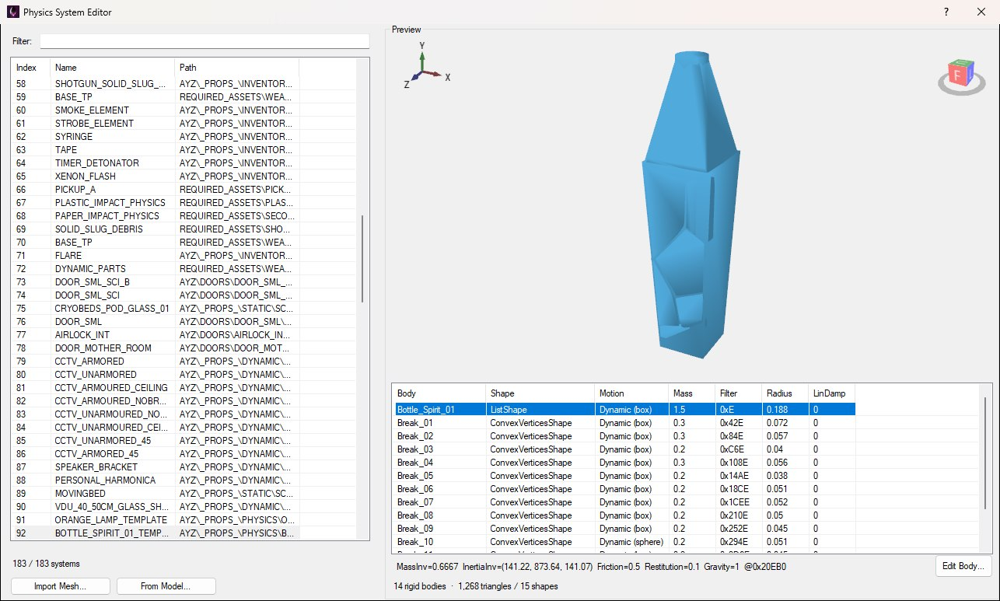
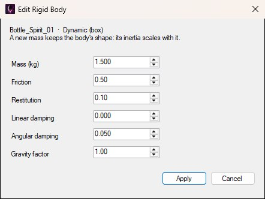
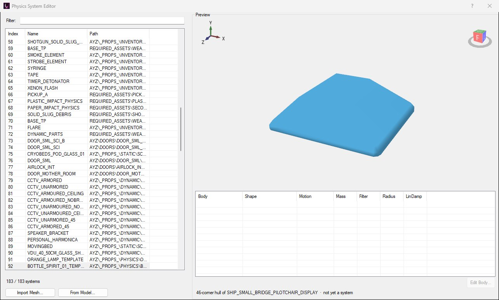
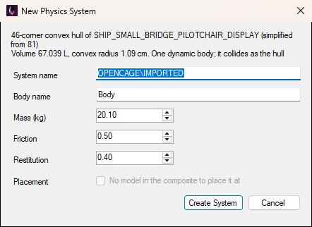

Props that fall, roll, smash and get knocked about move by a physics system in the level's WORLD/PHYSICS.HKX. A system holds one or more rigid bodies, each with a shape and the values the physics engine moves it by: its mass, friction, bounciness and so on. A PhysicsSystem entity in the prop's composite names its system through its Dynamic Physics System resource.
After loading a level, open View → Physics System Editor to browse the level's systems, look at their bodies, change a body's values, and import new systems from a mesh, as shown below.

A spirit bottle's system on Torrens: one body for the whole bottle and thirteen for the pieces it breaks into.
The same window opens as a picker from a PhysicsSystem entity's Resources button in the entity inspector, by clicking Set Physics... in its Dynamic Physics System group. As a picker it's titled Select Physics System and has a Select System button (see Assigning a System).
The list on the left has one row per system: its Index (the number a Dynamic Physics System resource stores), its Name, and the full Path that name ends. Retail systems are named after the composite they belong to. Type in Filter: to narrow the list by index or name.
Select a system to draw all of its bodies' shapes in the Preview (drag to orbit, scroll to zoom), with a count of bodies, triangles and shapes underneath. Its bodies are listed below the preview:
ConvexVerticesShape, a convex hull; a ListShape groups several.Selecting a body shows the rest of its values on the line under the list: its inverse mass and inverse inertia (what the engine actually stores), friction, restitution, gravity factor, and where it sits in the file.
A system belongs to its prop's composite, so every copy of that prop placed in the level uses the same one: change a body and every copy changes with it.
Select a body and click Edit Body..., or double-click its row, to change its values:

Editing the whole bottle's body. The boxes open on its current values.
Apply writes only the values you changed, then lists the body again with its new values and says it goes into the physics files when the level is next saved. Damping and gravity factor are stored at reduced precision, to about three significant figures, so they may come back very slightly rounded.
A body's values can only be edited on a PC level for now. A mobile or Switch level stores its physics in a different format, and the editor says so if you try.
As in the Collision Editor, two buttons under the list make a new system from a mesh: Import Mesh... for a model file, and From Model... for a model the level already has. Opened from Set Physics..., From Model... starts on the model the composite already draws.
A physics body is convex, so the mesh becomes its convex hull, simplified to at most 64 corners as the game's own props are. A concave model such as a chair tumbles as its outline. Flat meshes such as decals and loose paper are refused, because a body needs volume. The preview shows the hull, marked not yet a system, while a dialog asks for the new system's settings:


A pilot chair imported with From Model...: its legs and seat become one 46-corner hull, simplified from 81.
Create System adds it at the end of the list with the next index, selected. Cancel puts the preview back.
Opened from Set Physics..., the window starts with the entity's current system selected. Select another (a new import is already selected) and click Select System, or double-click its row, to give it to the entity and close the window. Opened from View, Select System is hidden and a double-click only selects the row.
Save and Build then puts the system in the world wherever the PhysicsSystem entity is.
The editor has no Save button of its own. Imported systems and edited bodies are held in memory and written when you save the level with File → Save Level (Ctrl+S). On PC that's both PHYSICS.HKX and PHYSICS.HKX64, which always get the same change. A mobile or Switch level has only the 64-bit file, so an import writes only that one.